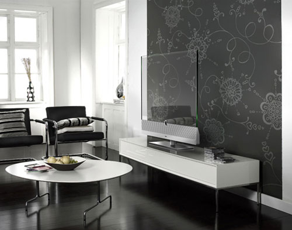

Interesting Household Technology
The transparent tv by Michael FriebeCombines conventional LCD and the latest TOLED display technology allowing solid moving pictures with rich color and full contrast!

Smart Fridge
A new 'Smart Fridge' with an embedded camera accessed through remote apps or the touchscreen tablet built into the fridge's right door may be a thing of the not-so-distant future! The fridge will have humidity and temperature sensors accessed through the fridge's network hub!
The camera is designed to help monitor spoilage, letting you keep a check on food without opening the door. Also mentioned are new "D-Day" alerts, reminding you when a food item may spoil! You can even order a replacement through the onboard operating system! The fridge hooks up to the "Internet of Things", meaning these features will work on your smartphone for an on-the-go experience!
The June smart oven
The June oven uses a built-in camera to detect what's inside and offers cooking suggestions based on its contents through image recognition and a heat-resistant camera that analyzes what you're cooking! Tired of having to change to a smaller plate when trying to fit it in? At 1.0 cubic feet, this oven can fit a 12-inch pizza!
June can currently only detect the basics: some meats, breads, veg and chocolate chip cookies but June's built-in camera is connected to your smartphone (via WiFi), meaning you can drool over your food from any room and even time-lapse the entire process through the June app!! June tracks your food's progress and can send you a notification when your food has finished cooking!
Segway's personal Robot!A built-in camera allows the robot to recognize objects and alter its path accordingly, never straying too far from its directive. It has Wi-Fi that enables it to connect to a range of devices, letting users use voice commands and program it to record video!
The Advanced Personal Robot is expected to go into production by early 2017.
Futuristic Home
"Homes will soon become intelligent enough to distinguish between family members and guests within physical spaces and adapt to individual needs based on biometrics like fingerprints, body temperatures and even the rhythm of our own heartbeats" (REF:http://www.wired.com)
Soon, you can become even lazier in your own home! A small piece of technology worn around the wrist will pair itself to your specific heartbeat, allowing your home to automatically adjust the lighting and room temperature for you, hassle-free! It will also be able to play custom music based on personalized preferences and pre-configured profiles!!
Written by Claire Finn